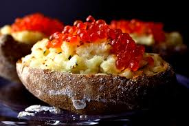
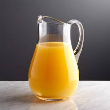
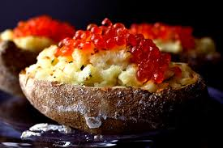
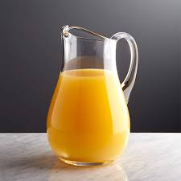

我的视力有点近
管乐队 很多空 很吵闹

| 0 | lassitude | ['læsitju:d] | n.无力；没精打采 |
| 1 | cob | [kɔb] | n.玉米棒子；雄天鹅 |
| 2 | conversant | [kən'və:sənt] | a.精通的，熟知的 |
| 3 | engross | [in'grəus] | v.全神贯注于 |
| 4 | epithet | ['epiθet] | n.(贬低人的)短语或形容词 |
| 5 | giggle | ['gigl] | v.咯咯笑 |
| 6 | girder | ['gə:də] | n.大梁 |
| 7 | infernal | [in'fə:nl] | adj. 地狱的；可恶的 |
| 8 | jovial | ['dʒəuviəl] | a.愉快的 |
| 9 | ludicrous | ['lu:dikrəs] | a.荒唐可笑的 |
| 10 | mettlesome | ['met(ə)lsəm] | a.精神抖擞的 |
| 11 | paleontology | [`pæliɔn'tɔlədʒi] | n.古生物学 |
| 12 | peevish | ['pi:viʃ] | a.坏脾气的，易怒的 |
| 13 | resin | ['rezin] | n.树脂 |
| 14 | riveting | ['rivitiŋ] | a.非常精彩的 |
| 15 | roe | [rəu] | n.鱼卵  |
| 16 | shiftiness | ['ʃiftinis] | n.奸诈 |
| 17 | swing | [swiŋ] | v.摇摆；旋转；n.秋千 |
| 18 | bellwether | ['bel.we0ə] | n.领导者，领头羊 |
| 19 | bibulous | ['bibjuləs] | adj. 高度吸收的; 嗜酒的 |
| 20 | cadge | [kædʒ] | v.乞讨；佔便宜 |
| 21 | canopy | ['kænəpi] | n.蚊帐，华盖 |
| 22 | ceramics | [si'ræmiks] | n.制陶业)；陶器 |
| 23 | cerebral | ['seribrəl] | a.大脑的；深思的 |
| 24 | cloture | ['kləutʃə] | n.辩论的终结 |
| 25 | cocoon | [kə'ku:n] | n.茧 |
| 26 | collage | [kə'lɑ:ʒ] | n.拼贴画 |
| 27 | complacent | [kəm'pleisnt] | a.自满的，得意的 |
| 28 | complaisance | [kəm'pleizəns] | n.彬彬有礼，慇懃，柔顺 |
| 29 | confederacy | [kən'fedərəsi] | n.联盟或同盟 |
| 30 | conformist | [kɔn'fɔ:mist] | n.尊奉者，英国国教徒 |
| 31 | corporal | ['kɔ:pərəl] | adj. 肉体的，身体的 |
| 32 | credo | ['kri:dəu] | n. 信条 |
| 33 | cutlery | ['kʌtləri] | n.(刀、叉、匙等)餐具 |
| 34 | deface | [di'feis] | v.损坏 |
| 35 | disfranchise | [dis'fræntʃaiz] | v. 剥夺…的权利(尤指选举权或公民权) |
| 36 | drudgery | ['drʌdʒəri] | n.苦工，苦活 |
| 37 | elated | [i'leitid] | a.得意洋洋的，振奋的 |
| 38 | elocution | [`elə'kju:ʃən] | n.演说术 |
| 39 | embroider | [im'brɔidə] | v.刺绣，修饰 |
| 40 | episodic | [epi'sɔdik] | a.偶然发生的，分散性的 |
| 41 | excursion | [iks'kə:ʃən] | n.短途旅游 |
| 42 | fang | [fæŋ] | n.(毒蛇的)尖牙 |
| 43 | fester | ['festə] | v.(指伤口)溃烂，化脓 |
| 44 | figurehead | ['figəhed] | n.名义领袖；傀儡 |
| 45 | fulcrum | ['fʌlkrəm] | n.杠杆支点，支柱 |
| 46 | garner | ['gɑ:nə] | v.收藏，积累 |
| 47 | grimace | [gri'meis] | v./n.做鬼脸，面部歪扭 |
| 48 | guttle | ['gʌtl] | v. 狼吞虎咽 |
| 49 | habituate | [hə'bitjueit] | v.使习惯于 |
| 50 | hackneyed | ['hæknid] | a.陈腐的，平常的 |
| 51 | harrow | ['hærəu] | n.耙；v.使痛苦 |
| 52 | headstrong | ['hedstrɔŋ] | a.刚愎自用的 |
| 53 | heckle | ['hekl] | v.诘问，困扰 |
| 54 | heretic | ['herətik] | n.异教徒 |
| 55 | immanent | ['imənənt] | a.内在的；普遍存在的 |
| 56 | immure | [i'mjuə] | v.监禁 |
| 57 | inadvertently | [`inəd'və:təntli] | adv.不小心地，非故意地 |
| 58 | incriminate | [in'krimi`neit] | v.连累，牵连 |
| 59 | infatuation | [in`fætju'eiʃən] | n.迷恋 |
| 60 | iota | [ai'əutə] | n.极小量，极少 |
| 61 | languid | ['læŋgwid] | a.没精打采的，倦怠的 |
| 62 | ligature | ['ligətʃuə] | n. 绑缚之物(尤指系住血管以免失血的线) |
| 63 | maladroit | [`mælə'drɔit] | a.笨拙的 |
| 64 | mercurial | [mə:'kjuəriəl] | a.善变的；活泼的 |
| 65 | misnomer | ['mis'nəumə] | n.名字的误用 |
| 66 | motley | ['mɔtli] | a.混杂的；杂色的 |
| 67 | myopic | [mai'ɔpik] | a.近视眼的；缺乏辨别力的 我的视力有点近 |
| 68 | obstreperous | [əb'strepərəs] | a.吵闹的，难管束的 管乐队 很多空 很吵闹 |
| 69 | ogle | ['əugl] | v.送秋波；n.媚眼 |
| 70 | orthodontics | [`ɔ:θəu'dɔntiks] | n.畸齿矫正学 |
| 71 | perfidy | ['pə:fidi] | n.不忠，背叛 |
| 72 | pitcher | ['pitʃə] | n.有柄水罐  |
| 73 | pledge | [pledʒ] | n.誓言，保证；v.发誓 |
| 74 | pleonastic | [`pli:əu'næstik] | adj. 啰嗦的 |
| 75 | porcelain | ['pɔ:slin] | n.瓷；瓷器 |
| 76 | prevaricate | [pri'værikeit] | v.支吾其词，说谎 |
| 77 | prodigal | ['prɔdigəl] | a.挥霍的；n.挥霍者 |
| 78 | pummel | ['pʌm(ə)l] | v. (用拳)接连地打，打击 |
| 79 | pundit | ['pʌndit] | n.权威人士，专家 |
| 80 | purloin | [pə:'lɔin] | v.偷窃 |
| 81 | pylon | ['pailən] | n.高压电线架；桥塔 |
| 82 | quail | [kweil] | v.畏惧，颤抖 |
| 83 | rambunctious | [ræm'bʌŋkʃəs] | a.骚乱的；(兴奋)控制不了的 |
| 84 | rancid | ['rænsid] | a.不新鲜的，变味的 |
| 85 | rectitude | ['rektitju:d] | n.诚实，正直 |
| 86 | redolent | ['redəulənt] | a.芬芳的，芳香的 |
| 87 | rendezvous | ['rɔndivu:] | n.约会；约会地点 |
| 88 | reportage | [`repɔ:'tɑ:dʒ] | n. 报导，报导的消息，报告文学 |
| 89 | retinue | ['retinju:] | n.侍从，随员团 |
| 90 | saunter | ['sɔ:ntə] | n./v.闲逛，漫步 |
| 91 | scabbard | ['skæbəd] | n.(刀剑)鞘 |
| 92 | sculpt | [skʌlpt] | v.雕刻 |
| 93 | scuttle | ['skʌtl] | n. 舷窗，舱口盖 |
| 94 | seafaring | ['si:feəri6] | adj. 航海的，跟航海有关的 |
| 95 | sever | ['sevə] | v.切断，脱离 |
| 96 | snub | [snʌb] | v.冷落，不理睬 |
| 97 | snug | [snʌg] | a.温暖的，舒适的 |
| 98 | splice | [splais] | v.接合，衔接 |
| 99 | stench | [stentʃ] | n.臭气，恶臭(stink) |